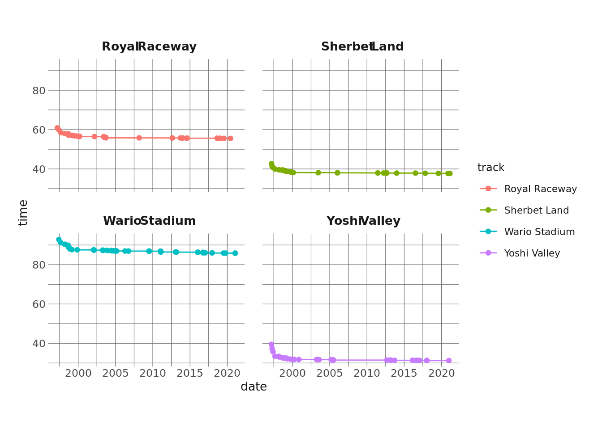

library(tidyverse)
library(eemisc)
library(harrypotter) #colors
library(nlme) #for mixed-effects models
library(broom.mixed) #functions for tidying mixed effects models
herm <- harrypotter::hp(n = 1, option = "HermioneGranger")
herm2 <- harrypotter::hp(n = 2, option = "HermioneGranger")[2]
opts <- options(
ggplot2.discrete.fill = list(
harrypotter::hp(n = 3, option = "HermioneGranger"),
harrypotter::hp(n = 7, option = "HermioneGranger")
)
)
theme_set(theme_ee())
records <- readr::read_csv('https://raw.githubusercontent.com/rfordatascience/tidytuesday/master/data/2021/2021-05-25/records.csv')I’ve been sort of out of the #TidyTuesday game for a while, but this week’s dataset on Mario Kart world records called to me. I have tons of fond memories from late elementary school and into middle school playing Mario Kart 64 with kids in my neighborhood. I certainly wasn’t world-record-caliber good (I was like 10ish), but I do remember learning little tricks like how to get the speed boost on the 3-2-1 go! countdown or how to power-slide through turns.
Anyway, when I initially looked at the dataset, I thought I’d approach it by trying to fit a model to predict whether or not a driver took advantage of a shortcut or not when they set a record, but alas, I waited until later in the week and got scooped by Julia Silge (check out her analysis here). Which is probably for the best, because she did a better job than I would have.
That said, when I dug into the data, I did stumble across some interesting patterns in the progression of records over time, so I want to show how we can model these progressions using some simple feature engineering and a relatively straightforward mixed-effects model.
Setup
First, we’ll load our packages, set some global options, and get our data.
Explore Data
So, what I’m interested in here is how the world record for each track progresses over time. To make sure all of our comparisons are “apples to apples,” I’m going to limit this to single-lap, no-shortcut records.
Let’s randomly choose 4 tracks and look at these records over time.
set.seed(0408)
samp_tracks <- sample(unique(records$track), size = 4)
records %>%
filter(track %in% samp_tracks,
type == "Single Lap",
shortcut == "No") %>%
ggplot(aes(x = date, y = time, color = track)) +
geom_point() +
geom_line() +
facet_wrap(vars(track))
It’s a little bit hard to tell what’s going on here, especially since the tracks are different lengths and seem to have different record asymptotes. Another issue is that record-setting seems to be clustered by dates. A lot of records are set in a cluster, then there’s a drought for several years where the record isn’t broken. In some analyses this may be meaningful, but I care less about the actual date a record was set on and more about where it is in the sequence of records for that track. So, it might be more straightforward to just assign a running count of records for each track:
records %>%
filter(track %in% samp_tracks,
type == "Single Lap",
shortcut == "No") %>%
group_by(track) %>%
mutate(record_num = row_number()) %>%
ungroup() %>%
ggplot(aes(x = record_num, y = time, color = track)) +
geom_point() +
geom_line() +
facet_wrap(vars(track))This puts all of our X-axes on the same scale, and it also removes a lot of the white space where we had no records being broken (again, this information might be useful for a different analysis).
We might also want to consider how we’re representing the lap time here. Each track is a different length, and each track has its own unique obstacles. We can see here that Wario Stadium is a much longer track than, say, Sherbet Land. By extension, a 1 second decrease in time on Sherbet Land means a lot more than a 1 second decrease in time on Wario Stadium.
Standardizing our measure of time – and our measure of improvement over time – will help us out here. What I’m going to do is, for each record (and specific to each track), calculate how much better (as a percent) it was than the first world record on that track. This will give us a standard way to compare the progress of each world record across all of the tracks.
Let’s graph this to see what they look like.
records_scaled <- records %>%
filter(type == "Single Lap",
shortcut == "No") %>%
group_by(track) %>%
mutate(init_wr = max(time),
pct_better = 1 - time/init_wr,
record_num = row_number()) %>%
ungroup()
records_scaled %>%
ggplot(aes(x = record_num, y = pct_better)) +
geom_point(color = herm) +
geom_line(color = herm) +
labs(
x = "Record Number",
y = "Pct Improvement over Initial"
) +
scale_y_continuous(labels = scales::percent_format()) +
facet_wrap(vars(track)) +
theme_minimal()These are a lot easier to compare, and we can see a pretty definitive pattern across all of the tracks. There are some sharp improvements in the early record-setting runs, but then these improvements attenuate over time, and records are getting only a teeny bit faster each time they’re broken.
And this is sort of what we’d expect, particularly given a closed system like Mario Kart 64. The game isn’t changing, and people will hit a threshold in terms of how much better they can get, so it makes sense that these records are flattening.
Another interesting feature of the above graphs is that they (strongly) resemble logarithmic curves. We can plot these below to illustrate the similarity:
records_scaled %>%
ggplot(aes(x = record_num, y = pct_better)) +
geom_point(color = herm) +
geom_line(color = herm) +
facet_wrap(vars(track)) +
labs(
x = "Record Number",
y = "Pct Improvement over Initial"
) +
scale_y_continuous(labels = scales::percent_format()) +
stat_function(fun = function(x) .1*log(x, base = 10), geom = "line", color = herm2) +
theme_minimal()We can see that the general shape of the logarithmic curve matches the general shape of the track records here. I multiplied the curves by an arbitrary constant just to plot them, so of course we don’t expect them to match perfectly. That said, this does give us a clue that, given these feature engineering choices, we can model the data using a logarithmic curve.
Building A Model
There are a few paths we could take moving forward to model the data. Two in particular stand out to me:
- We could fit a model separately for each track, where
percent_betteris regressed on the log ofrecord_num. - We could fit a multilevel model where
percent_betteris regressed on the log ofrecord_numand specify a random intercept and a random slope by track. This is the option I’m going to take.
To give a very quick and insufficient nod to multilevel models (MLMs), they are useful for modeling clustered data (data where there are known dependencies between observations). The prototypical example of this is looking at people over time. Imagine you have a dataset of 1,000 observations where each of the 50 people in the dataset contributes 20 observations. When modeling this, you’d want to account for the fact that within-person observations are not independent. The one I encounter a lot in education is students clustered within classrooms. Different application, but same principle. For more on MLMs, Raudenbush & Bryk (2002) is a great resource, as is John Fox’s Applied Regression Analysis, which as a chapter on MLMs. My friend and colleague Mike Broda also has made public some content from his multilevel modeling (and multivariate statistics) course in R as well.
Anyway, moving along! We basically have clustered data here: records are clustered within (read: dependent upon) each track. What an MLM allows us to do is fit a single model to the entire dataset while also allowing some of the parameters to vary by track. More specifically, we can allow the intercept to vary (which we don’t actually need here, since we’ve standardized our intercepts, but it’s just as easy to allow it), and we can allow the slope to vary. Varying the slope will let us estimate a different progression of world record runs for each track, which we can see that we need from the plots above.
I’m using the {nlme} package to fit this model. And the model I’m fitting can be read as follows:
- I want a “regular” fixed-effects model where
pct_betteris regressed on the log ofrecord_num. - I also want to allow the coefficient of the log of
record_numto vary depending on which track the record was set on.
mod <- lme(fixed = pct_better ~ log10(record_num),
random = ~ log10(record_num) | track,
data = records_scaled)And let’s take a look at the results (thanks to {broom.mixed}):
tidy(mod)# A tibble: 6 × 8
effect group term estimate std.error df statistic p.value
<chr> <chr> <chr> <dbl> <dbl> <dbl> <dbl> <dbl>
1 fixed <NA> (Intercept) 0.0162 0.00505 608 3.20 1.44e- 3
2 fixed <NA> log10(record_n… 0.0518 0.00396 608 13.1 1.46e-34
3 ran_pars track sd_(Intercept) 0.0199 NA NA NA NA
4 ran_pars track cor_log10(reco… 0.768 NA NA NA NA
5 ran_pars track sd_log10(recor… 0.0156 NA NA NA NA
6 ran_pars Residual sd_Observation 0.00651 NA NA NA NA For what it’s worth, we see that both of the fixed effects are statistically significant. For reasons that I don’t quite remember off the top of my head, there’s some debate about doing hypothesis tests on random effects, so these aren’t included here (I think other packages will run these tests if you really want them). The main thing I focus on here, though, is that there’s a seemingly non-negligible amount of variance in the coefficient for record_num (see the term sd_log10(recordnum)). The mean coefficient is .051, and the standard deviation of the coefficient values is .015, which seems meaningful to me.
Plotting Our Results
To get a better sense of what this model is doing, as well as to graphically examine how well it does, we can use the augment() function from {broom.mixed}. Let’s plot our fitted values against our actual pct_better values.:
aug <- mod %>%
augment()
aug %>%
filter(pct_better != 0) %>%
ggplot(aes(x = pct_better, y = .fitted)) +
geom_point(color = herm) +
theme_minimal()We’re expecting an a-b line here, so this is good.
Finally, though, what if we plot our actual values and our fitted values against record_num to see how well our model predictions compare to the real values, and let’s look at this by track:
aug %>%
select(track, .fitted, pct_better, record_num) %>%
pivot_longer(cols = c(".fitted", "pct_better"),
names_to = "type",
values_to = "val") %>%
ggplot(aes(x = record_num, y = val, color = type)) +
geom_point(alpha = .4) +
facet_wrap(vars(track)) +
theme_minimal()The fitted values pretty much entirely overlap with the actual values (with the exception of Yoshi Valley and maybe sort of DK Jungle Parkway), which means we have a pretty solid model, here!
If we wanted, it would be fairly straightforward to translate these predictions back into seconds, but I’m going to call it done right here. Hopefully this post illustrates that with a little bit of feature engineering, you can build a really good model without having to load {xgboost} or {keras}. And hopefully it encourages people to dig more into MLMs!
Reuse
Citation
BibTeX citation:
@online{ekholm2021,
author = {Eric Ekholm},
title = {It’s-a {Me,} {Linear} {Regression}},
date = {2021-05-30},
url = {https://www.ericekholm.com/posts/its-a-me-linear-regression},
langid = {en}
}
For attribution, please cite this work as:
Eric Ekholm. 2021. “It’s-a Me, Linear Regression.” May 30,
2021. https://www.ericekholm.com/posts/its-a-me-linear-regression.